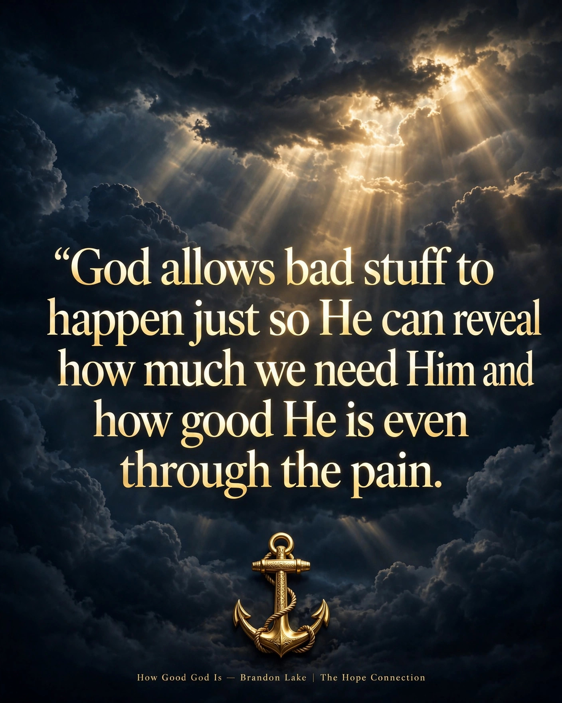

Sometimes God allows bad stuff to happen just so He can reveal how much we need Him and how good He is even through the pain.
Sometimes God allows bad stuff to happen just so He can reveal how much we need Him and how good He is even through the pain.
Brandon Lake's song "How Good God Is" says it perfectly — it's about recognizing God's goodness not just when life is easy, but when the journey itself teaches us to depend on Him more deeply.
If you're in a hard season right now, hear this: the pain isn't proof that He's abandoned you. It's often where you discover just how good He really is.
What's a song that's carried you through a dark season? We'd love to hear it — share it in the comments on our Facebook Page or Instagram.
Who needs to hear this today? Send this to them.